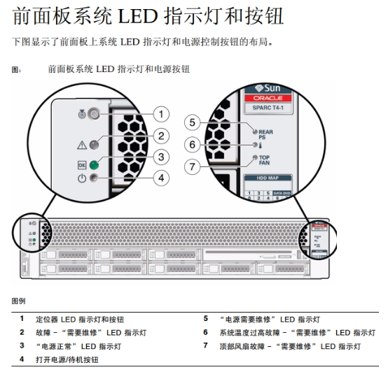
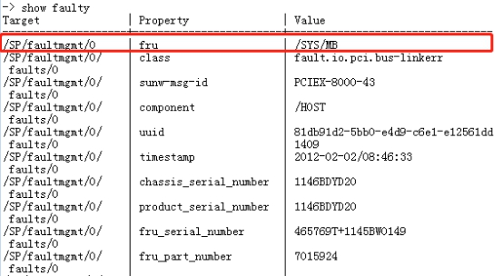
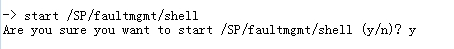
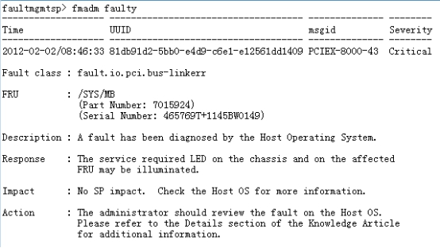

服务器前、后面板上故障灯亮。附服务器前面板指示灯示意图

服务器主体硬件故障多种情况，其故障指示灯也分别独立，在处理时需做好区分，提高判断及处理速度。
3.1笔记本（预装SCRT）；
在电源故障、顶部风扇故障及硬盘故障时，均有独立状态指示灯作为提示，此处不再进行展开说明，更换对应配件即可。其中更换硬盘故障作为独立案例进行说明。
4.1使用笔记本通过RJ45连接服务器后面板上net mgt网口，配置笔记本ip地址192.168.A.B。其中”A”为车站号，与服务器车站序号一致，”B”为0-255任意一数字。
4.2使用SCRT连接登录，登录地址为192.168.A.1/2，其中地址D段1为1号服务器，2为二号服务器。输入用户名：root；密码：changeme。
4.3在命令提示符界面，输入”->show faulty”打印如下图所示内容:

其中第一行property为fru为故障项，value为具体故障内容。
4.4继续在命令行内输入”start /SP/faultmgmt/shell”进入故障处理菜单，如下图所示

输入”y”后按回车键确认。
4.5继续输入”fmadm faulty”查看具体故障信息，输出内容如下图所示：

4.6如果此故障判断为偶发性故障，可尝试使用清除命令检查是否继续报出。执行”fmadm repair /SYS/MB”命令，其中”/SYS/MB”为步骤（3）中的”value”值；
4.7验证是否持续报出故障
再次执行指令”fmadm repair /SYS/MB”，如反馈输出”No faults found”则说明故障已消除，如故障任然存在，则需对硬件进行更换处理。